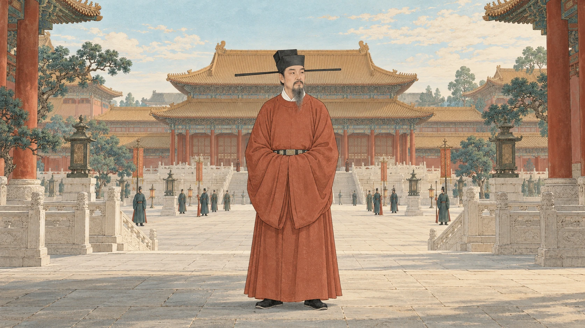
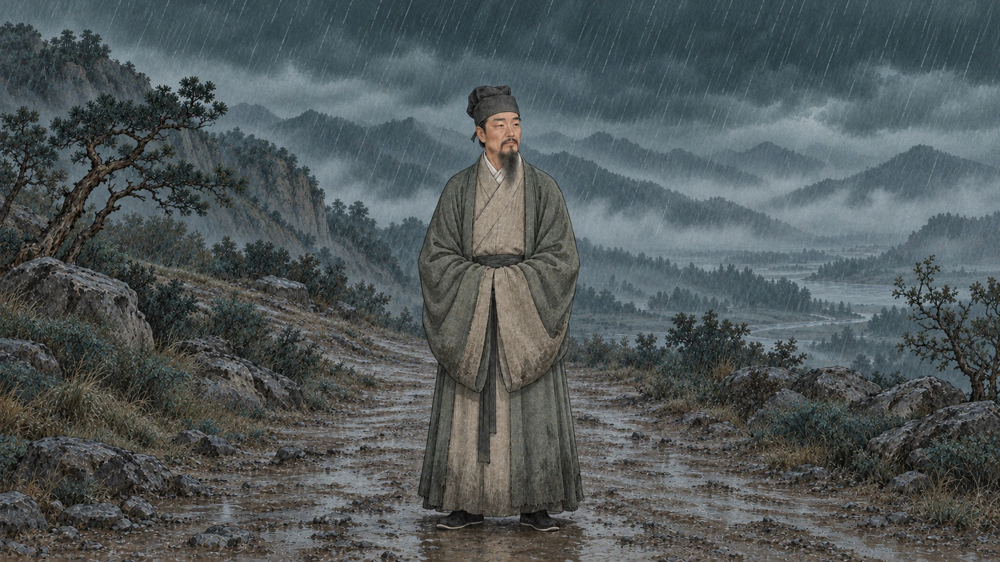
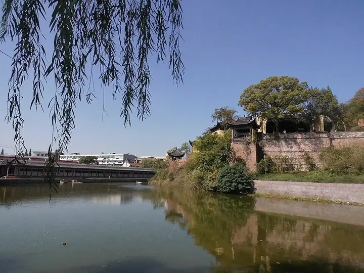
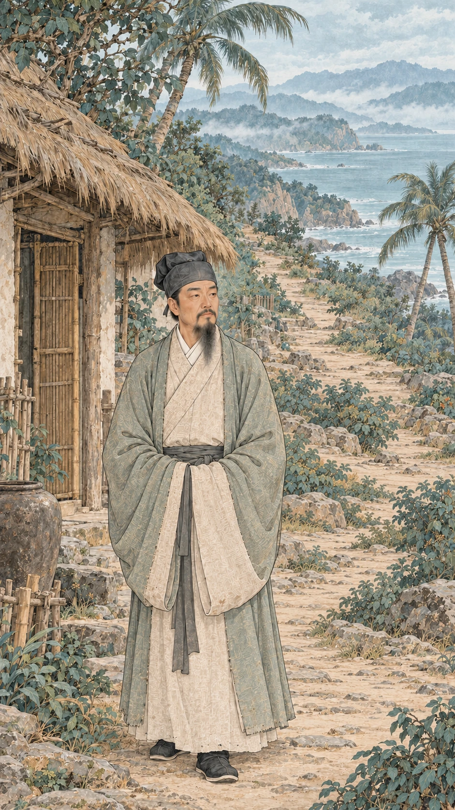
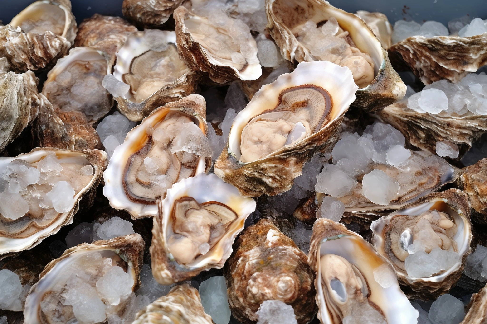
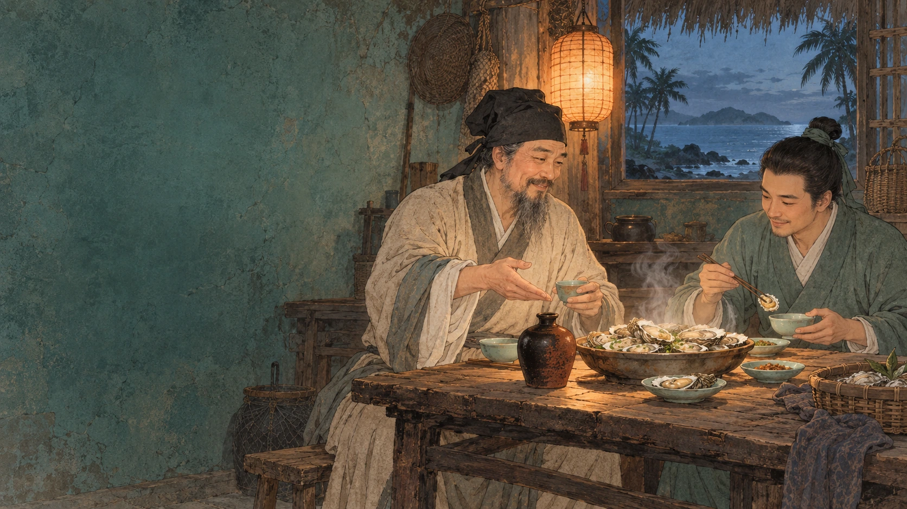

My name is
Su Shi.
You may know my poems. I was also an official.
Once, my writing won recognition, and my name reached the imperial court.
I had a voice in affairs of state, and so much I hoped to achieve.


You may know my poems. I was also an official.
Once, my writing won recognition, and my name reached the imperial court.
I had a voice in affairs of state, and so much I hoped to achieve.
My views brought me into conflict with those in power.
The words that had once earned me recognition became grounds for accusation. I was arrested, questioned, and stripped of my position.
The future I had imagined suddenly felt out of reach. I had wanted to serve the country. Now, I was struggling to find my own place in it.

Life has to go on

My third son, Su Guo, had come with me to Hainan. Together, we had to make a life here.
Where would we live? What would we eat? What would we do if we fell ill? These questions felt more urgent than the distant court.
With help from local people, we slowly settled in. Faces became familiar. We began to notice things we had never known before.
Then, one day, someone brought us oysters...
Two days before the winter solstice, local people brought us oysters.
We opened the shells and gathered several measures of flesh and juice. Add water. A little wine. Let them cook together.
Then, one mouthful.
So delicious. I had never tasted anything quite like it. I took some of the larger oysters and roasted them over the fire. Hot from the embers, eaten just like that. Even better than boiled.

I could not resist writing about such a meal. But I kept reminding Su Guo of one important thing.
Do not tell anyone.
If those gentlemen in the north heard how delicious the oysters were here, they might all compete to follow my example. And ask to be exiled to Hainan.
Then what? They would come here and take a share of my oysters!

Tomorrow, there would still be things to worry about. But tonight, the oysters were warm, and the wine was good. I called Su Guo over. Come, eat while they’re hot. The rest could wait until morning.